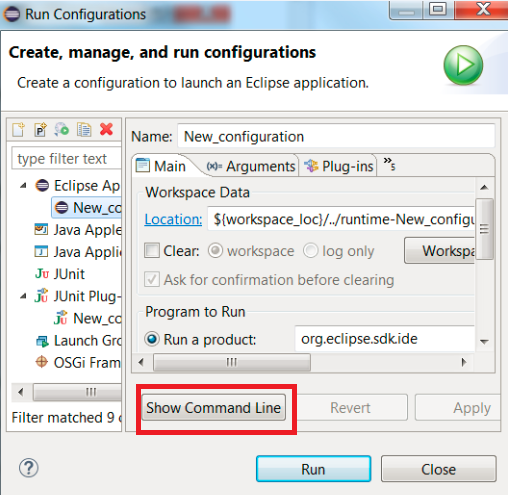
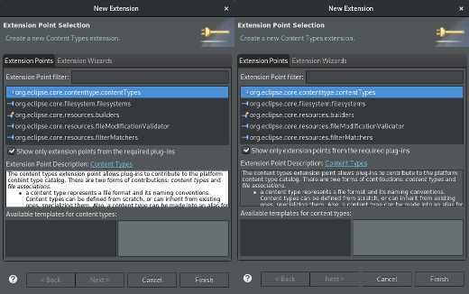

Here are descriptions of some of the more interesting or significant changes made to the Plug-in Development Environment (PDE) for the 4.9 release of Eclipse. They are grouped into:
See also the Eclipse Platform What's New and JDT What's New documents.
We also recommend to read the Tips and Tricks.
Dialogs, Wizards and Views |
|
| Show Command Line button in PDE Launch Configuration |
A new button Show Command Line has been added in the PDE launch configuration dialog.
 Clicking the button will open a dialog to show the command line used for launching the application. |
| Extension point description on dark theme |
When extension point descriptions were displayed in a wizard page, the text background and foreground were not styled correctly for the dark theme. This has now been corrected.
 |
PDE Compiler |
|
| Relaxed scheduling rule for builders |
The scheduling rule for PDE builders was relaxed. Instead of using the workspace
root, it now uses a composition of all PDE projects.
As a result, distinct PDE projects won't build in parallel, but PDE doesn't prevent independent non-PDE projects from building in parallel. |